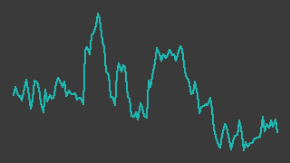
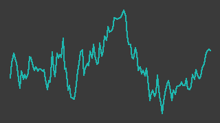
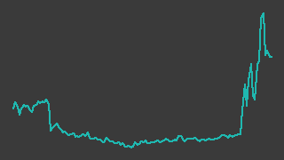
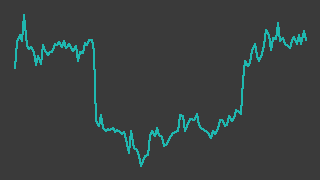
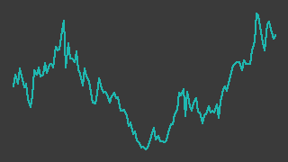
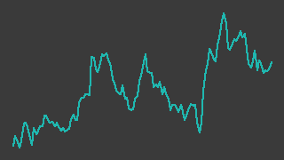
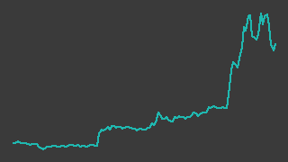
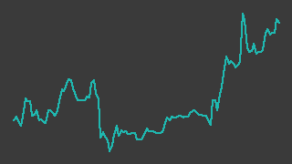
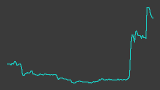
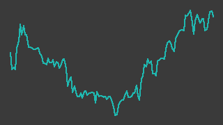

銘柄調査台帳
楽天証券スクリーニング「成長株0830（per）」の通過銘柄を調査し、週次で記録する。売買の判断は人間が行う。読み方・記号の意味は「読み方」へ。
監視中16銘柄ほかに対象外 4銘柄（既定で隠す。一覧のボタンで表示）
レポートあり20調査済みの銘柄数
再調査0全節を見直しなおす対象
基準日2026-09-03確定している最後の営業日
| 銘柄 | 終値・判定 | 形状（6か月）※ | 推定営業利益 | 今週の動き |
|---|---|---|---|---|
| JSHIR情報 ↗150A／東証グロース／対象外（2026-08-28〜）・更新を止めている裏取り 30/39・2026-08-26屋内型水耕栽培農園「コルディアーレ農園」で地方の障がい者雇用を支える地方創生事業と、精神疾患を主対象とする訪問看護（在宅医療事業）の2本柱。利益は事実上ぜんぶ地方創生事業が出しており、在宅医療はまだ赤字。 7月の上方修正・初の中期計画と8月の1Q黒字転換・初配・自社株買いを受けて株価は約2か月半で2.4倍になり、判定は「様子見(過熱)」。 | 7412026-08-27 | — | — | 2026-W35週間 -0.7%。 |
| 関電工IR情報 ↗1942／東証プライム／裏取り 24/50・2026-08-29東京電力パワーグリッドを筆頭株主に持つ、首都圏最大手の電気設備工事会社。2026年3月期は売上高 7,420億円✓・営業利益 831億円✓・営業利益率 11.2%✓と過去最高を更新し、利益率の上昇が続いている。データセンター向け受注も伸びているが、株価は5月の高値から4分の1下げており、「上がった利益率を市場が何年ぶんと見ているか」が論点。 | 5,6812026-09-03前週末比 +3.8%判定 見送(雲の下) |  調整 | 推定営業利益 90,752百万円前期比 +9.2% | 2026-W36続伸。 |
| きんでんIR情報 ↗1944／東証プライム／裏取り 36/67・2026-08-29関西電力系の電気設備工事会社。工場や事務所ビルなどの「一般電気工事」が伸びて2026年3月期は売上7,507億円✓・営業利益903億円✓（前期比+48.0%）、営業利益率は12.0%✓まで上がり、手持工事高も過去最高水準にある。一方で2026年4〜6月に、筆頭株主だった関西電力グループから約2,237億円ぶんの自社株を借入で買い取って消却したため、自己資本比率は72.4%✓から49.9%†へ落ち、実質無借金だった財務が純有利子負債に反転した。 | 7,0732026-09-03前週末比 +3.5%判定 見送(雲の下) |  調整 調整 | 推定営業利益 102,556百万円前期比 +13.6% | 2026-W36小幅続伸。 |
| クラフティアIR情報 ↗1959／東証プライム／裏取り 36/67・2026-08-29九州電力系の電気設備サブコンで、2025年10月に「九電工」から社名を変えた。売上はほぼ横ばいのまま工事利益率が上がり、2026年3月期の経常利益は中期経営計画が2029年度に置いた目標のすぐ手前まで来ている。最大の不確実性は、完成時期が後ろにずれ続けている宇久島メガソーラーのEPC工事。 | 8,2092026-09-03前週末比 +0.4%判定 見送(雲の下) |  下落 下落 | 推定営業利益 53,892百万円前期比 -1.3%会社計画比 -2.9% | 2026-W36ほぼ横ばい。 |
| 高砂熱学工業IR情報 ↗1969／東証プライム／裏取り 33/55・2026-08-29空調設備工事の設備サブコン。半導体工場やオフィスの空調を設計から施工まで請け負い、連結営業利益は2023年3月期の 15,326百万円✓ から2026年3月期の 47,745百万円✓ へ3倍を超えた。ただし2027年3月期1Qは産業設備の端境期で減収減益†、株価は2026年2月の高値 5,683円✓ から2割超下の 4,361円✓ にある。 | 4,2722026-09-03前週末比 -1.1%判定 見送(雲の下) |  調整 | 推定営業利益 44,230百万円前期比 -7.4%会社計画比 -11.5% | 2026-W36小幅反落。 |
| 日本一ソフトウェアIR情報 ↗3851／東証スタンダード／対象外（2026-08-28〜）・更新を止めている裏取り 62/72・2026-08-29岐阜県各務原市のゲームソフトメーカー。『魔界戦記ディスガイア』『夜廻』などの自社IPを自分で作り、自分の名前で売る。2026年3月期まで2期連続の営業赤字だったが、7月30日発売の新作『ほの暮しの庭』の堅調な販売を受け、会社は2026-08-28に27年3月期の業績予想を上方修正した（通期経常利益449→906百万円、上期は3.1倍）。株価は52週高値圏にあるが、修正後計画も含め実績で確かめられるのは2Q（7-9月）決算から。 | 1,2972026-08-27 | — | — | 2026-W35訂正：上の一筆「同日にSTM HERITAGEの…」は誤り。 |
| ジィ・シィ企画IR情報 ↗4073／東証グロース／対象外（2026-08-28〜）・更新を止めている裏取り 47/65・2026-08-26中堅〜大手の小売チェーン向けに、レジとカード会社をつなぐ決済システムを作って運用している千葉の小型株。2026年6月期は黒字転換したが会社予想には届かず、焦点は2027年6月期計画の達成と、8月下旬の立会外分売後の需給に移っている。 | 4952026-08-27 | — | — | 2026-W35週間+2.7%。 |
| ヴィッツIR情報 ↗4440／東証スタンダード／裏取り 37/66・2026-08-31名古屋の組込みソフト受託会社。自動車の制御ソフトを軸に、機能安全・車載サイバーセキュリティ・仮想空間シミュレーションへ広げてきた。2025年8月期は売上高 4,856百万円✓・営業利益 566百万円✓と過去最高で、2026年8月期の会社計画も7月に 5,650百万円✓へ上方修正されている。一方で株価は今年1月の高値から3割下げたあと、8月末にトヨタの自動運転報道をきっかけに急騰しており、動いているのが業績なのかテーマなのかが論点。 | 2,0332026-09-03前週末比 +36.9%判定 様子見(過熱) |  急上昇 | 推定営業利益 674百万円前期比 +19.0%会社計画比 +6.4% | 2026-W36急伸・出来高急増。 |
| キタック決算短信・開示情報 ↗4707／東証スタンダード／裏取り 35/58・2026-08-31新潟を地盤とする総合建設コンサルタント。売上のおよそ9割†は官公庁向けの地質調査・土木設計で、国の年度末に納品が寄るため2〜4月期に利益が集中し5〜7月期は赤字になる。時価総額は21億円程度※・1株純資産に対して0.5倍台※と小さく安いが、2026年10月期は第3四半期までの受注高が前年同期比14.6%減†で、通期計画の営業利益は残り1四半期に4割弱を残している。 | 3422026-09-03前週末比 -6.3%判定 流動性低 |  もみ合い もみ合い | 推定営業利益 169百万円前期比 +16.0%会社計画比 -33.3% | 2026-W36第3四半期減益発表後の軟調地合いが続く 株価: 週間 -6.3%（365→342円・採用終値ベース、照合成立 4日、週内 333〜342円） 出来高: 前… |
| WaqooIR情報 ↗4937／東証グロース／対象外（2026-08-28〜）・更新を止めている裏取り 44/63・2026-08-23通販化粧品のD2Cから、美容クリニック向けの血液・脂肪加工受託（メディカルサポート事業）へ主力が入れ替わった会社。親会社は湘南美容クリニックを運営するSBCメディカルグループ（持分51.51%）で、2026年9月期3Q累計は営業黒字415百万円※へ転換し、8月7日の上方修正・株主優待新設をきっかけに株価は52週高値2,355円✓まで急伸した。ただし売買代金の中央値は224万円※にとどまり、板の薄さがこの銘柄の最大の論点である。 | 2,2842026-08-27 | — | — | 2026-W35週間-7.0%と大きめの下落。 |
| スマートドライブIR情報 ↗5137／東証グロース／裏取り 30/45・2026-08-31社用車の走行データを集めて、車両管理のクラウドサービスとして売る会社。2022年9月期の営業赤字 319百万円✓から2025年9月期の営業黒字 390百万円✓まで来たが、2026年9月期の会社計画 売上 4,583百万円✓（前期比 +59%）は、その増収の大半が2026年1月に 1,385百万円†で買った子会社の連結で説明できる。株価はこの一年で −38.5%（採用終値）と沈んだあと、8月13日の第3四半期決算から2週間で +30.2% 戻している。 | 3082026-09-03前週末比 -2.8%判定 様子見(過熱) |  リバウンド | 推定営業利益 517百万円前期比 +32.6%会社計画比 -30.4% | 2026-W36小幅続落。 |
| noteIR情報 ↗5243／東証グロース／裏取り 30/53・2026-08-31クリエイターが投稿するメディアプラットフォーム「note」と、法人向けSaaS「note pro」を運営し、流通した金額から手数料を取る会社。2024年11月期に営業黒字化し、2026年11月期は7月に営業利益の計画を11.0億円✓へ引き上げ、前期実績2.6億円✓の4.3倍を見込む。ただし引き上げの主因は増収ではなく費用の下振れで、株価はすでに年初来高値の近くまで戻している。 | 2,7012026-09-03前週末比 -12.4%判定 様子見(過熱) |  リバウンド | 推定営業利益 1,111百万円前期比 +334.1%会社計画比 +1.0% | 2026-W36大幅安。 |
| 弁護士ドットコムIR情報 ↗6027／東証プライム／裏取り 30/48・2026-08-31法律相談ポータル「弁護士ドットコム」と電子契約「クラウドサイン」を運営し、法務AI「LegalBrain」と、2026年に買収した弁護士保険・弁護士費用サービスへ手を広げている会社。2026年4〜6月期は売上高4,838百万円✓・営業利益698百万円✓でいずれも四半期の過去最高。ただし株価は8月の3週間で2.2倍になっており、上げの材料には決算のほかに米国のAI誤引用問題という業績と直結しない話題が混じっている。 | 4,9002026-09-03前週末比 -4.1%判定 様子見(過熱) |  急上昇 急上昇 | 推定営業利益 2,947百万円前期比 +33.7%会社計画比 -1.8% | 2026-W36反落。 |
| 明電舎IR情報 ↗6508／東証プライム／裏取り未実施変圧器・開閉装置など送配電の機器と、水処理・EV向け電機を手がける重電メーカー。データセンターと再生可能エネルギーの増加で電力インフラ部門が伸び、営業利益は4期で3倍を超えた✓。ただし2026年3月期は受注高が前期比 -6.6%※と落ち、直近の四半期で回復に転じたところ。株価は6か月で +61.1%✓上げており、台帳の機械判定は「様子見（過熱）」。 | 10,5302026-09-03前週末比 -10.2%判定 様子見(過熱) |  上昇 | 推定営業利益 32,879百万円前期比 +21.2%会社計画比 -0.4% | 2026-W36反落。 |
| 共和コーポレーションIR情報 ↗6570／東証スタンダード／裏取り 38/70・2026-08-26長野県から全国へ広げたアミューズメント施設「アピナ」（2026年6月末時点76店舗※）を運営し、クレーンゲームの景品需要で伸びている会社。売上は4年で倍増し、直近の1Q決算（8月10日発表）は売上+69.4%✓・営業利益3.2倍✓の大幅増益だった。株価は決算後に急騰して52週高値圏にあり、時価総額は約240億円（8/20の採用終値3,970円✓×発行済株式数※）。 | 4,2252026-09-03前週末比 +15.0%判定 様子見(過熱) |  急上昇 | 推定営業利益 3,308百万円前期比 +88.3%会社計画比 +65.4% | 2026-W36急伸。 |
| ダイヘンIR情報 ↗6622／東証プライム／裏取り未実施受変電機器・蓄電池システム（エネルギーマネジメント）、溶接ロボット（FA）、半導体製造装置向けの高周波電源（マテリアルプロセシング）の3本柱を持つ電機メーカー。受注残高が前期比 +30.7% と売上の伸び（+5.0%）の6倍の速さで積み上がっており、自ら大形変圧器の生産能力を2倍にする投資を進めながらなお増えている。ただし受注残の伸びは半導体向けが牽引しており、データセンター単独の話ではない。台帳の機械判定は「見送（トレンド）」。 | 12,2002026-09-03前週末比 -6.0%判定 見送(雲の下) |  調整 調整 | 推定営業利益 23,862百万円前期比 +27.1%会社計画比 -4.6% | 2026-W36反落。 |
| 森尾電機IR関連ニュース（会社IR） ↗6647／東証スタンダード／裏取り 25/45・2026-08-31鉄道車両の行先表示器・配電盤・車内照明をつくる1911年創業の受注生産メーカーで、売上の8割超が鉄道向け。2026年3月期は減収ながら営業利益8.56億円✓と2期連続の増益で、受注高は売上を35億円上回った。会社の今期計画は増収・47%減益だが1Qの営業利益は前年同期の2.2倍†で、計画と実績のどちらを信じるかが目下の論点。 | 3,3702026-09-03前週末比 -0.3%判定 調査 |  急上昇 | 推定営業利益 846百万円前期比 -1.1%会社計画比 +88.1% | 2026-W36ほぼ横ばい。 |
| 原田工業IR情報 ↗6904／東証スタンダード／裏取り 24/41・2026-08-31車載アンテナの専業メーカー。3期続けて減収の計画を置きながら「収益構造改革」で利益率だけを引き上げてきた会社で、2026-08-13 の1Q決算では通期の会社計画に対して経常利益が9割超まで進んだ。計画は据え置かれ、株価は決算翌営業日に460円✓から540円✓へ跳ねた。ただし普段の売買は1日数千株しかなく、議決権の過半を創業家側が握る。 | 6312026-09-03前週末比 +12.7%判定 様子見(過熱) |  急上昇 | 推定営業利益 2,720百万円前期比 +13.4%会社計画比 +36.0% | 2026-W36急伸・出来高急増。 |
| アディッシュIR情報（会社IR） ↗7093／東証グロース／裏取り 45/64・2026-08-31SaaS企業などに代わって「カスタマーサクセス」業務を人手で請け負う東証グロースの小型BPO。売上は毎期増えているが利益はほぼゼロ近辺で、2025年12月期は営業利益2.5百万円✓とようやく黒字に戻った水準。今期計画は営業利益70百万円✓だが中間期はまだ営業赤字で、上期の未達を下期でどう埋めるかが目下の論点。 | 5962026-09-03前週末比 -0.5%判定 流動性低 |  リバウンド | 推定営業利益 19百万円前期比 +655.6%低ベース会社計画比 -73.0% | 2026-W36ほぼ横ばい。 |
| アクシスコンサルティングIR情報 ↗9344／東証グロース／裏取り 33/57・2026-08-31コンサルタントなどのハイエンド人材に特化して、人材紹介（AXIS Agent）とフリーコンサルの月次稼働（AXIS Solutions）を同じ人材データベースの上で回す会社。2026年6月期は売上高82.9億円✓・営業利益4.92億円✓で会社計画を上回り、2027年6月期は営業利益8.0億円✓の計画を出した。ただし時価総額は約66億円※・20日平均売買代金は2,902万円※で、台帳の機械判定は流動性ゲートの手前（「流動性低」）で止まっている。 | 1,3202026-09-03前週末比 +0.0%判定 調査 |  急上昇 急上昇 | 推定営業利益 891百万円前期比 +81.2%会社計画比 +11.4% | 2026-W36株価は横ばい。 |